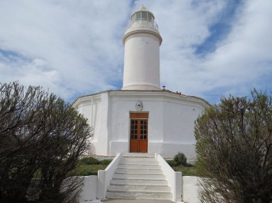
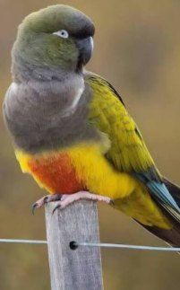
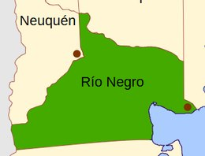
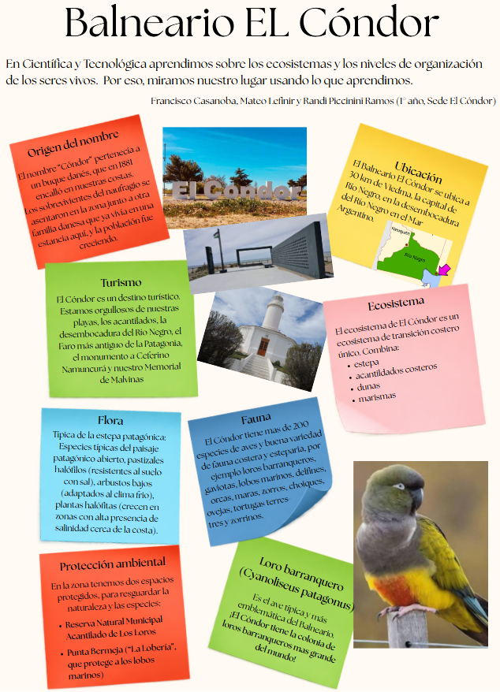

¿Alguna vez miraste tu propio pueblo con los ojos de la ciencia?
En Científica y Tecnológica aprendimos sobre los ecosistemas y los niveles de organización de los seres vivos. Por eso miramos nuestro lugar usando lo que aprendimos, y esto es lo que encontramos.
El origen del nombre
El nombre «Cóndor» pertenecía a un buque danés que en 1881 encalló en nuestras costas. Los sobrevivientes del naufragio se asentaron en la zona junto a otra familia danesa que ya vivía en una estancia de aquí, y la población fue creciendo.
Dónde estamos
El Balneario El Cóndor se ubica a 30 km de Viedma, la capital de Río Negro, en la desembocadura del río Negro en el Mar Argentino.
Lo que mostramos a quien nos visita
El Cóndor es un destino turístico. Estamos orgullosos de nuestras playas, los acantilados, la desembocadura del río Negro, el faro más antiguo de la Patagonia, el monumento a Ceferino Namuncurá y nuestro Memorial de Malvinas.

Un ecosistema de transición costero
El ecosistema de El Cóndor es único porque combina varios ambientes a la vez:
- Estepa: el paisaje abierto y seco de la Patagonia.
- Acantilados costeros: las paredes altas que caen sobre el mar.
- Dunas: la arena que el viento mueve y acumula.
- Marismas: las zonas bajas que la marea cubre y descubre.

La flora
La vegetación es típica de la estepa patagónica: pastizales halófilos (resistentes al suelo con sal), arbustos bajos adaptados al clima frío y plantas halófitas, que crecen donde hay mucha salinidad cerca de la costa.
La fauna
El Cóndor tiene más de 200 especies de aves y una buena variedad de fauna costera y esteparia: loros barranqueros, gaviotas, lobos marinos, delfines, orcas, maras, zorros, choiques, ovejas, tortugas terrestres y zorrinos.

Dos espacios protegidos
En la zona tenemos dos espacios protegidos para resguardar la naturaleza y las especies:
- Reserva Natural Municipal Acantilado de Los Loros: resguarda los acantilados donde nidifican los loros barranqueros.
- Punta Bermeja («La Lobería»): protege a los lobos marinos.
El loro barranquero, el ave emblemática
El loro barranquero (Cyanoliseus patagonus) es el ave típica y más emblemática del balneario. ¡El Cóndor tiene la colonia de loros barranqueros más grande del mundo!
El artículo original
Así quedó armado el trabajo que presentamos en Científica y Tecnológica, con las fotos y el diseño que hicimos en clase.

Francisco Casanoba, Mateo Lefinir y Randi Piccinini Ramos · 1.º año · Sede El Cóndor